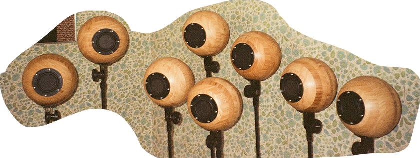
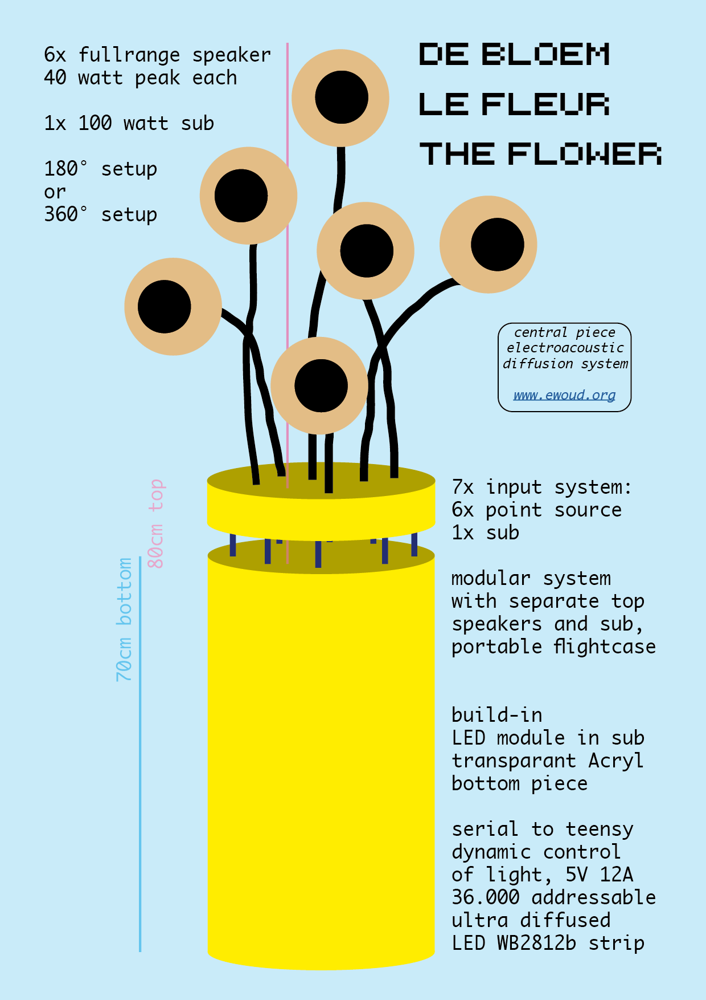
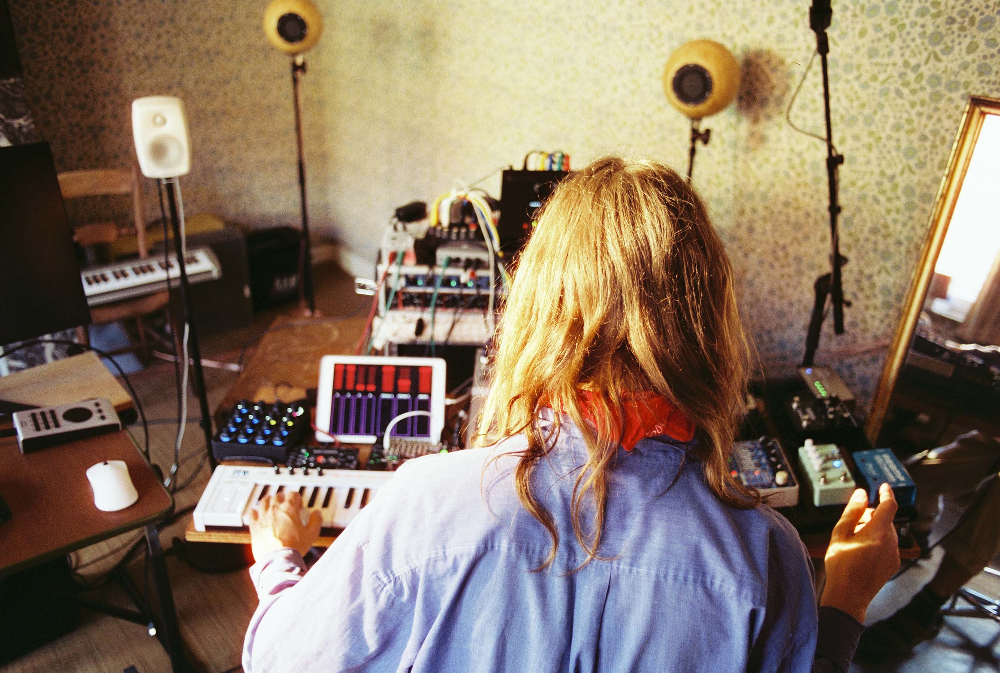

upcoming events
presenting my composition Flux à vélo violet
opening afternoon at Walter for a guided open impro practice as a former resident
news
after finishing my first portable surround audio installation for the use in studio composition and installation, in collaboration with the audio-tech wizard Benjamin Jacobs and instrument builder Simme Vandersteen 
I have been dreaming of building an even lighter, ready to go sound diffusion system. These ideas led to the creation of the 'Bloem \ Fleur \ Flower':
an audiovisual installation and performance instrument with speakers and optional subwoofer with integrated light-diffusing-system that would be able to radiate sound and light in a one-angle 180° or surround-angle 360° manner. This installation piece would be used — in context of de Dromentuin for small concerts. Or it would integrate with the full octophonic surround system to get a contrast/depth between center and surround.
After testing multiple designs, speakers and electronic circuitry for quality and portability, the prototyping is nearly finished. Pictures follow soon, for now, a drawing:

